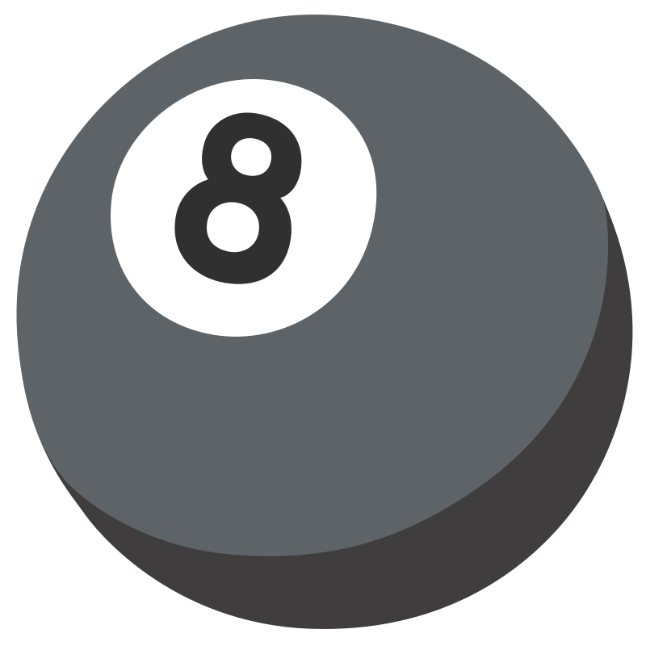
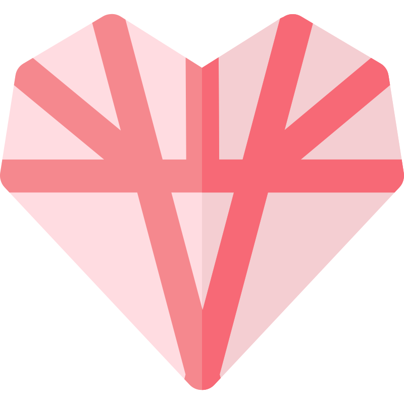

Offline Game Center
Play classic Silverwolf games without internet connectivity.
LOCAL MODESilver
Wolf
Flip a virtual coin. Will it be heads, tails, or... side?

Ask the magic 8-ball a question and let fate decide.
Munch on a virtual fortune cookie to see what the future holds.

Calculate your compatibility or incompatibility with someone.
XO
XO
OX
Tic-tac-toe where your oldest marks expire. Outlast the bot.